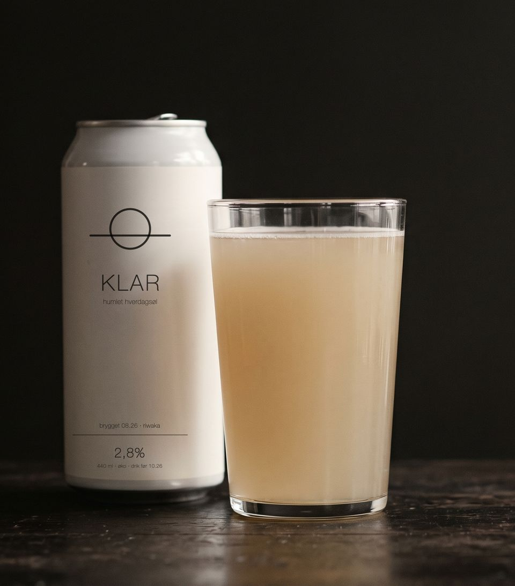
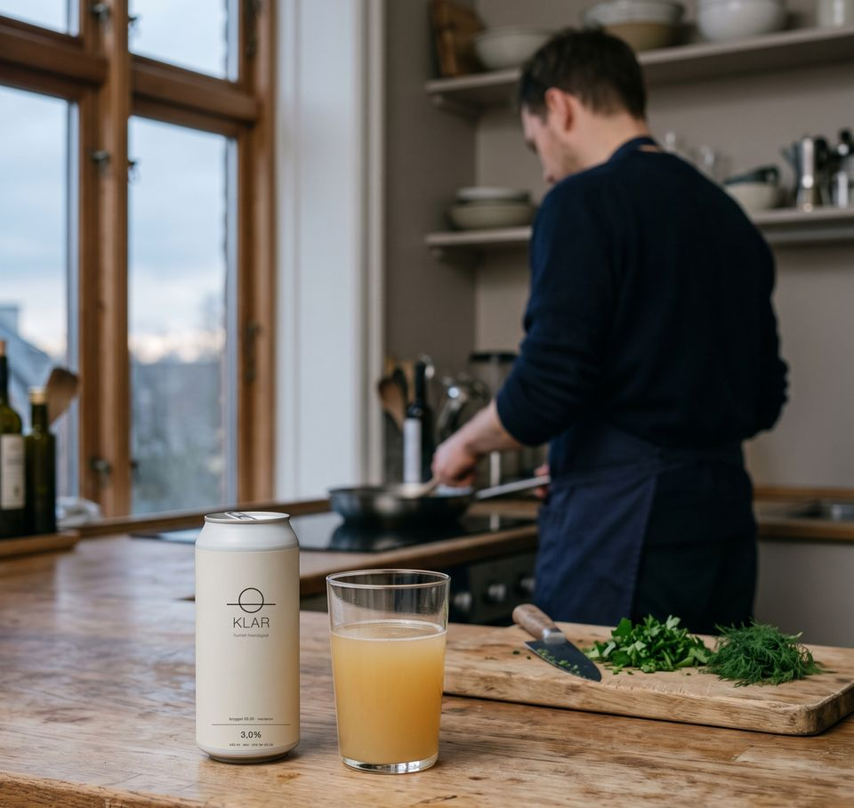
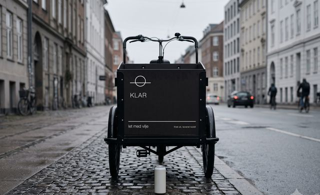
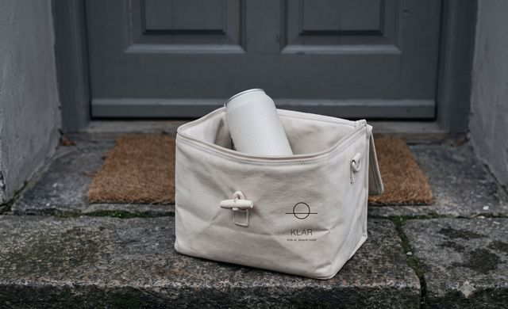
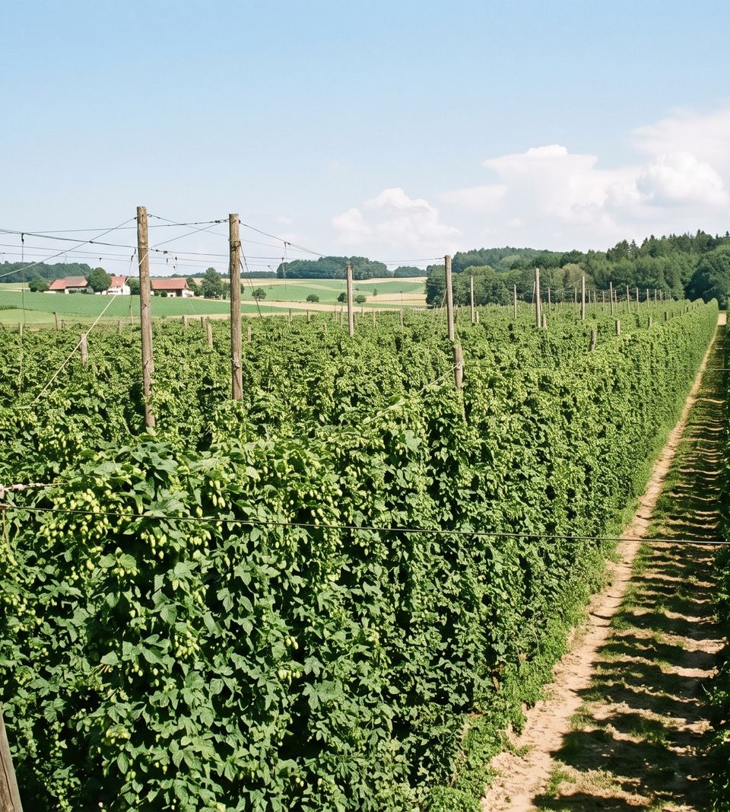

Klar humlet hverdagsøl
- 2,7%
- økologisk malt
- humle fra seneste høst
- kold hele vejen


let med vilje
i århundreder var hverdagens øl let og frisk — den stærke var til fest. vi laver den igen, med humle fra i år.
2,7% er ikke en light-udgave af noget andet. det er den styrke, øllen er bygget til.
humle drikkes friskt
humle er en blomst. den falmer. tid og varme tager det bedste først. derfor sælger vi kun øl, der er frisk. og kold hele vejen — fra tank til hane.


vi brygger efter årstiden
humle høstes på hver sin side af jorden med et halvt år imellem. vi brygger med den, der senest er landet. samme krop, samme styrke, samme profil — det er kun smagen, der flytter sig.
lander i danmark
- new zealand
- maj — juni
- australien
- juni — juli
- tjekkiet, tyskland
- oktober — november
- usa, england
- november — december

vi brygger kun det, der er bestilt
intet står på lager. intet bliver gammelt. intet bliver hældt ud.
pris
- 9 liter
- 22 glas
- 500 kr
- 20 liter
- 50 glas
- 1.000 kr
alle priser ekskl. moms. hane, køletaske, levering og afhentning er med. faktureres månedsvis forud. en uges varsel, hvis det skal stoppe.
prøv et fad
et fad. en dag. gratis.
hane og levering med. vi henter det tomme igen. ingen binding, ingen faktura.
uklar i glasset. klar i hovedet.